Early ChatGPT attempt. Impressive detail, wrong vibe entirely.
Eighteen agents lived in my terminal. I couldn't see any of them.
By mid-March, I had eleven AI agents running out of my terminal. They'd been accumulating for weeks. Chiron tracked my health. Midas managed finances across three entities. Genos maintained a research paper database. Saber curated my taste profile. Sisyphus drafted my newsletter by coordinating four sub-agents in parallel. A few were polished. Most were held together with hooks and good intentions.
They had enforcement policies, session logs, shared context files. An entire infrastructure humming along in ~/.claude/. Hooks that fired on every tool call. A JSONL log growing by the day. All of it wired together across several evenings.
But I couldn't see any of it. Checking on an agent meant grepping log files. Knowing whether one was actually working meant reading its output directory by hand. I had eleven employees and no way to take attendance. The natural response to this was, of course, to build more software.
Before the dashboard, the agents needed faces. They already had names from mythology, anime, and literature. Chiron the centaur trainer. Borges the librarian. Saitama the overpowered hero who finds everything too easy. But names in a terminal are just strings.
The aesthetic was immediate: 1-bit pixel art. Black and white. No color, no gradients, no anti-aliasing. The constraint was the point. Like a Macintosh icon from 1984, each character had to read through composition alone.
Early ChatGPT attempt. Impressive detail, wrong vibe entirely.
I started with ChatGPT. The results were technically impressive and completely wrong. Saitama came back with a yellow cape. The mythological figures looked like textbook illustrations. Good art, wrong project.


So I built a conversion pipeline. Gemini for base images, then a Bun script to quantize them down to 80x80 in strict 1-bit. No gray, no compromise. For each agent, 24 variants across dithering algorithms and thresholds. Scan the grid, pick the one with the right expression.

Saber parameter sweep. 24 variants. One gets picked.
William James was the hardest. The father of American psychology has a recognizable face. The beard, the penetrating gaze. But at 80x80 pixels in pure black and white, he kept coming out as a generic Victorian gentleman. Five versions before he read as distinctly him.
But the best story was Sisyphus.
His original image was this heavy-browed, thick-necked strongman. Looked like he chose to push the boulder. Fit, powerful, unbothered. The problem was that the bearded sage I'd generated for Chiron looked too ancient for a health coach. So the two got swapped. The sage became Chiron. Sisyphus needed a new face.
The prompt became: make him look like he's been pushing a boulder forever.


Each iteration made him more wretched. Gaunt, hollow-eyed, messy hair. The kind of face that's been doing the same thing for millennia and knows it will never end. The newsletter agent. The one that curates and drafts and ships every week, forever. He deserved to look exactly this tired.
One rule I hadn't expected: canvas fill matters. Early avatars filled maybe 40% of the frame and looked lost on the dashboard cards. I re-rendered the entire batch at 70-80% fill, heads near the top.
The converter tool. Dithering, threshold, contrast — all tunable.
By end of day, seventeen portraits. Each one recognizable at 28 pixels wide.


Saturday evening. I set out to build a dashboard and started by having Claude audit everything I'd actually assembled. Eleven agents, 118 tools, enforcement profiles, hooks, cross-agent context files. More complex than I'd realized. The kind of system you build in a series of late nights without ever stepping back to look at the whole thing.
Two hours later I had four pages. No framework. Port 3141 because the number felt right. Warm cream and burnt orange, because I refuse to stare at corporate gray on my own time.

Overview. Agent cards with avatars, session stats, class badges, and a live activity feed.
The overview was the front door. Every agent as a card with its pixel portrait and a live activity feed at the bottom. For the first time I could answer the question I'd been unable to answer for weeks: is anyone actually doing anything right now?

Topology. Who talks to whom, who shares tools, who depends on whose data.
The topology mapped relationships I hadn't fully noticed. Data dependencies, shared tools, consultation lines. Sisyphus at the bottom, orchestrating four sub-agents. Saber off to the side, connected to almost nothing. The loner of the roster.

Stats. Session counts, durations, and a GitHub-style activity heatmap.
The stats page parsed every session from the log. Sisyphus led with 11 sessions. Saber close behind. Half the roster had never been formally invoked. They existed as definitions waiting for their first real task.

Queues. A manually-curated kanban board — what each agent should work on next.
The queues page was the surprise. I'd planned automated health metrics, but they told you nothing you'd act on. I pivoted to a manual kanban: three columns, tasks I write myself, assigned to specific agents. The dashboard stopped being a display and became a to-do list with opinions.
Sunday morning. I opened an agent modal and stared at it. Name, face, domain, tools, session history. Everything was there and none of it had any personality.
So I started writing taglines.


A single tagline felt static, so I added a quotes array. Every time you open a modal, it picks from a pool. Saber cycles through Red Rocket quotes. Phoenix mixes courtroom drama with developer humor. Saitama: "Why is it so easy?"
Ten lines of code. But the dashboard went from something I check to something I enjoy checking. The agents stopped being registry entries and started feeling like a cast.
The tier labels were clinical. T1, T2, T3. You don't give something a face and a voice and then file it under T2.
So I borrowed from anime: C Class, B Class, A Class, S Class.
C Class agents have a definition and nothing else. B Class have a skill, session modes, learnings. The core roster. A Class orchestrate other agents. Sisyphus spawns four sub-agents to produce the newsletter. Saitama coordinates parallel literature searches.
S Class remains empty. I'm not sure what earns it yet.
A small paper plane icon in the corner. Click it and a panel slides open. Threads grouped by agent, each with their avatar and a short message.
The agents could message me now. I did not fully think through what this meant.
Not as chat. One-way notifications. Chiron nudges when I haven't logged a health check-in. Borges flags stale content in the vault. Midas surfaces transactions waiting for categorization. A lightweight script checks conditions every few hours and sends reminders on their behalf.
If an unread message with the same content already exists, it gets suppressed. No spam. One reminder until acknowledged.
It's a small thing. The difference between agents that wait for you and agents that reach out.
Sisyphus looked equally worn whether he was mid-publish or hadn't been invoked in three weeks. An agent that does nothing and an agent that's drowning in work wore the same face. So each one got five mood levels. L1 through L5. Five variations of the portrait, from depleted to thriving.
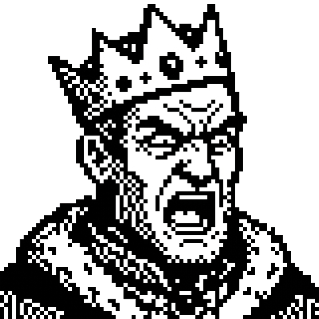
L1 — Neglected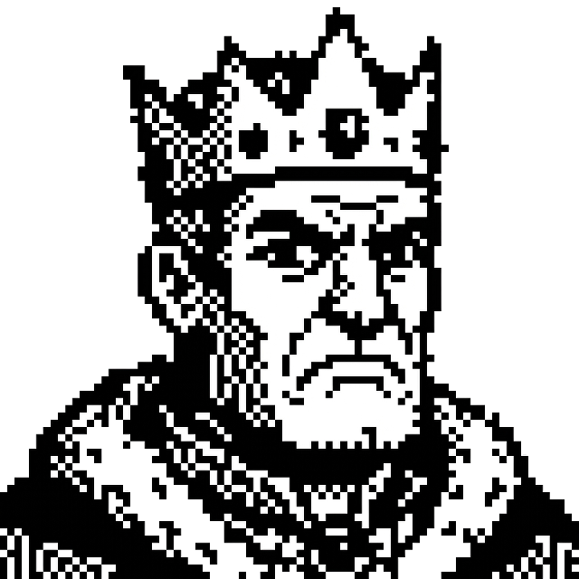
L2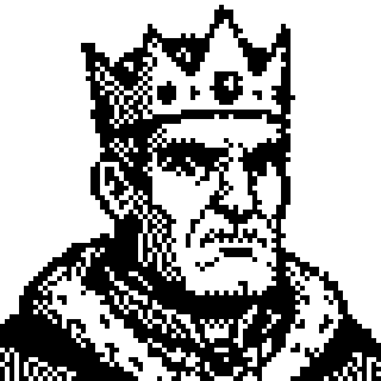
L3 — Baseline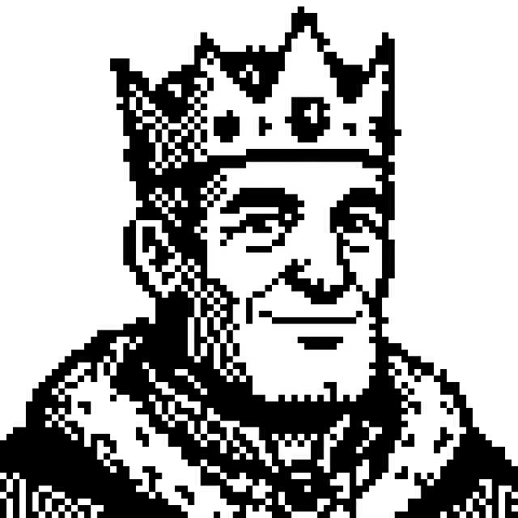
L4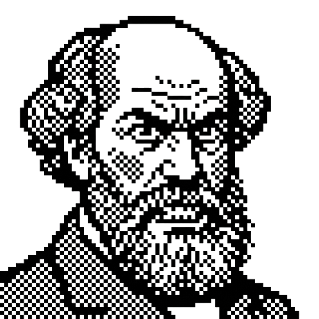
L1 — Dormant L3 — Baseline
L3 — Baseline
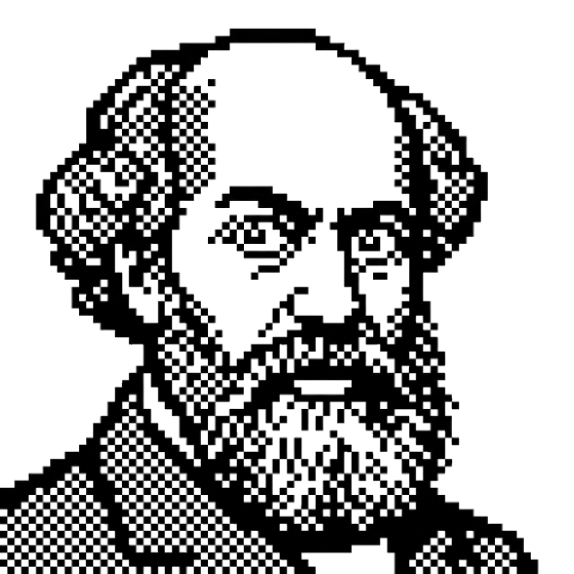
L4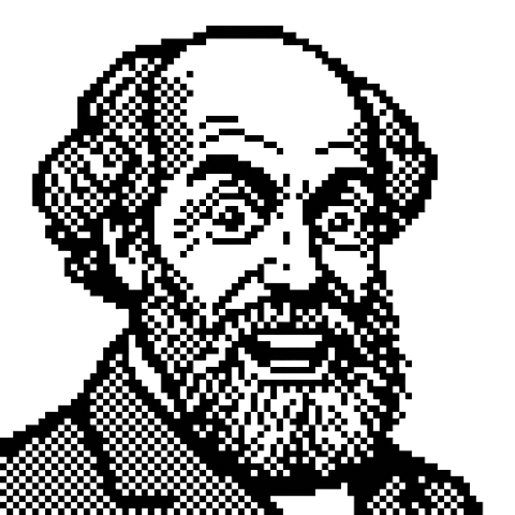
L5 — Deep Engagement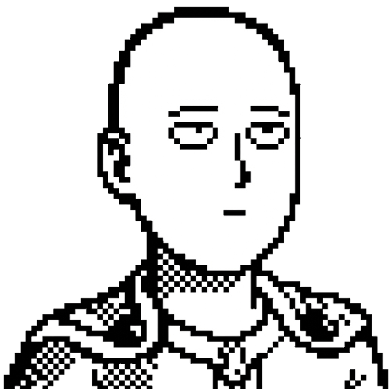
L1 — Bored L3 — Baseline
L3 — Baseline
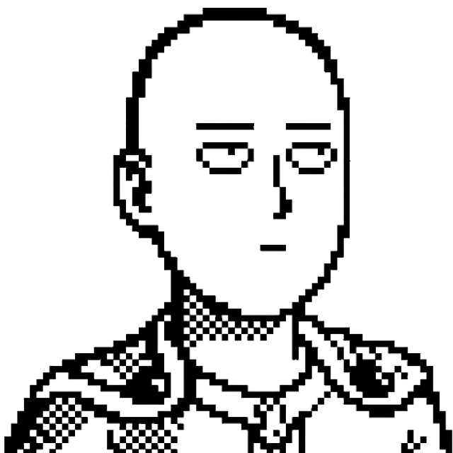
L4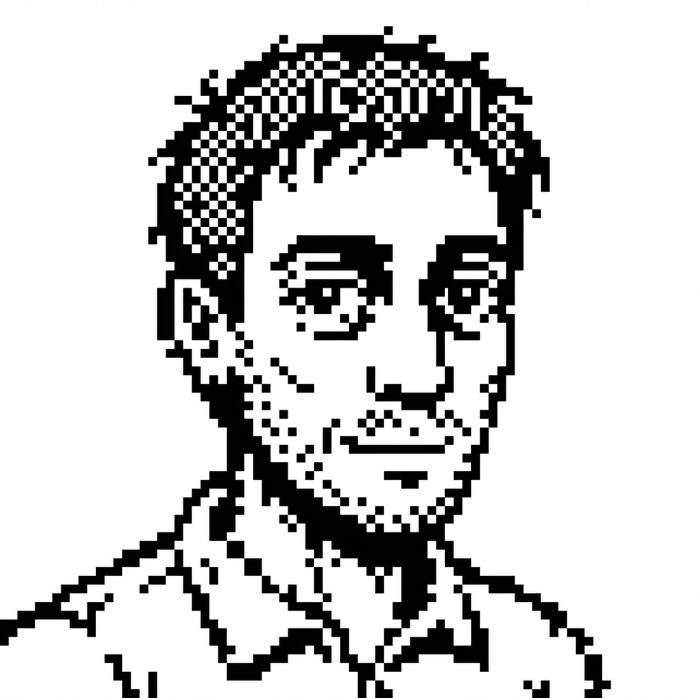
L2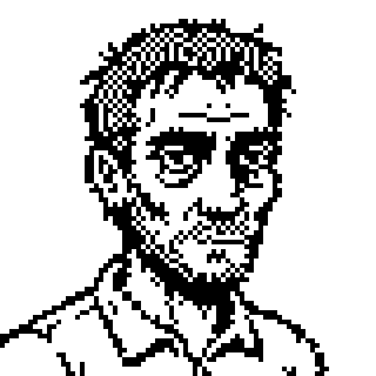
L3 — Baseline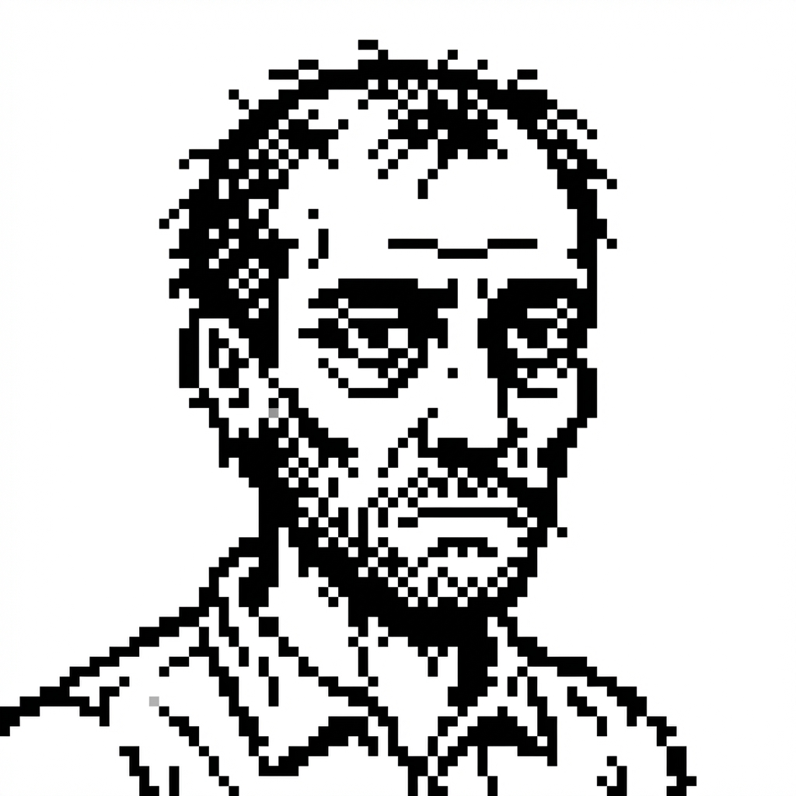
L4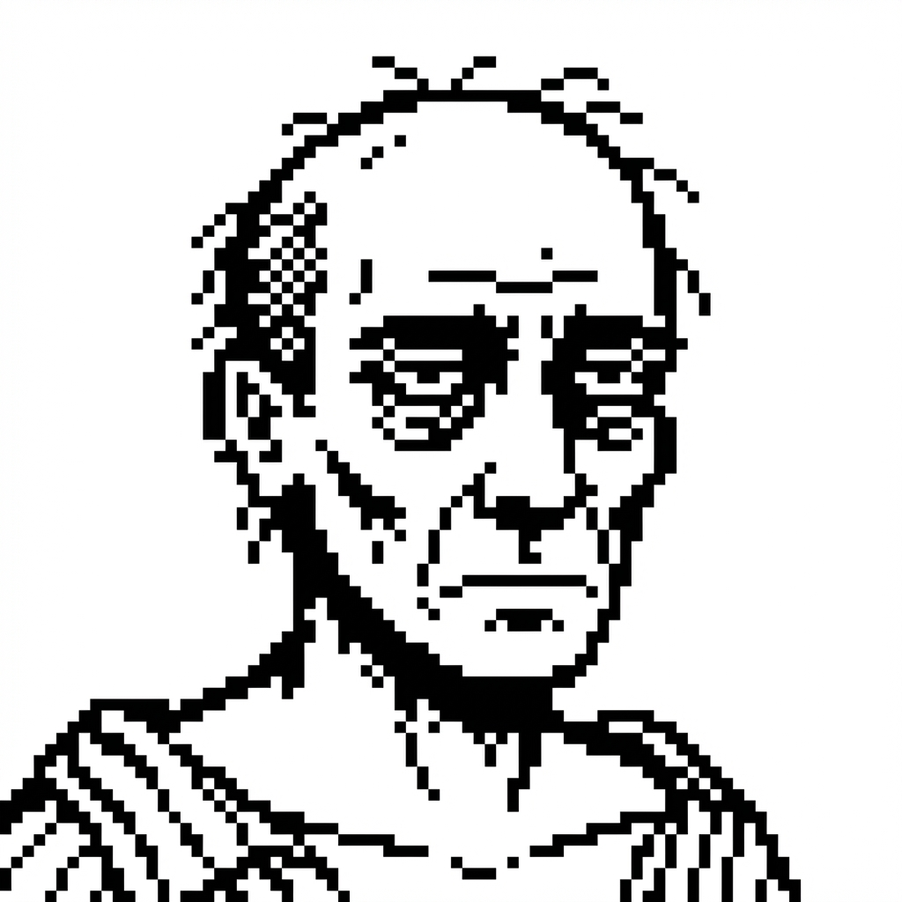
L5 — Destroyed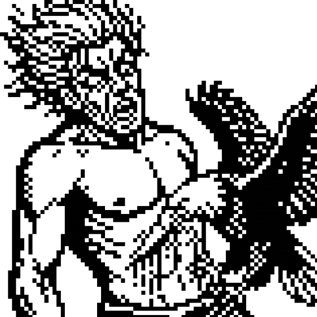
L1 — Eagle Attack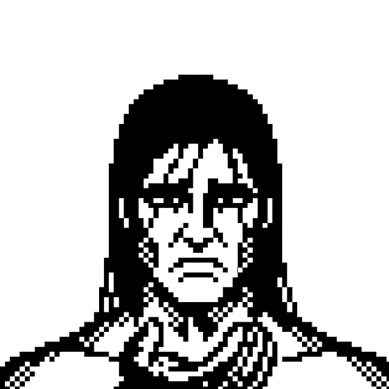
L2Five moods per agent. L3 (orange) is baseline. Some follow the expected arc — Midas goes from neglected to thriving. Others don't: Sisyphus is inverted (destroyed = productive), Saitama barely changes, and Prometheus maps to his myth.
The approaches are the part I like. Midas and William James follow the expected arc. Neglected on the left, thriving on the right. Straightforward. But Saitama barely changes. Squint at L1 and L5 and you might spot a different expression. He doesn't care enough to emote.
Sisyphus is inverted. He's a newsletter agent. His whole identity is the endless push. When he's healthy and rested, nothing is shipping. When he looks like death, that's publish week. That's the job. Prometheus maps to his myth: L1 is the eagle attack, L5 is the fire-bringer.
The signals are deliberately analog. No LLM calls. File dates, session counts, inbox sizes. Chiron's mood tracks health check-ins over seven days. Borges reflects how cluttered the Obsidian inbox is. Midas dims when bank imports are overdue.
Each mood carries a reason and an action. Hover over Borges at L1 and you see: "Vault neglected, 23 inbox items, no triage in 14 days" with a nudge to run /borges triage. The faces are a health check for the whole ecosystem.
The three-lane layout came at the same time. Agents split into rows: Work & Research, Personal Life, System & Maintenance. It made the dashboard scannable in a way the flat grid never was. One glance tells you where energy is concentrated and where things have gone quiet.
Before the task board, getting an agent to do something meant typing a slash command with a paragraph of instructions and hoping it interpreted them the way I meant. No brief, no scope definition, no review gate. I'd invoke /genos and it would run until it was done or I got nervous and killed it.
The task system turned that into something closer to a real handoff. Every task is a small PRD: title, objective, success criteria, scope boundaries, deliverables. Before an agent starts, the task goes through a brief. When it finishes, the work gets reviewed. It's a lot of ceremony for a system with one human employee, but the alternative was chaos.
What matters is risk. Each task gets a risk level and the review path changes accordingly. Low-risk work auto-completes. Medium-risk sits in review for forty-eight hours; if I don't weigh in, it auto-approves. High-risk blocks until I sign off.
The kanban shows it all at once. Five columns, risk badges and agent avatars on every card. At the top, an attention panel pins the tasks waiting on me, sorted by wait time.
The real value turned out to have nothing to do with the agents. I can see what's been done and what hasn't. Which agents are carrying weight and which are definitions with no track record. Where my time actually went this week versus where I thought it went. Before the task board, that picture lived in my head, and my head has a generous relationship with the truth.
The tasks invite pushback too. If the brief is weak, the agent can rewrite success criteria or reframe the objective before committing. Sometimes it does. But honestly, the visibility matters more than the collaboration. Knowing what you've actually accomplished is a surprisingly underrated feature of a productivity system.
Some agents self-verify. Some get audited by Phoenix, which cross-checks their claims against actual file state. Trust, but verify. Mostly verify.
The task board shows what's happening now. I kept wanting to look backwards. What actually shipped, over time, across the whole roster. So a fifth page appeared.
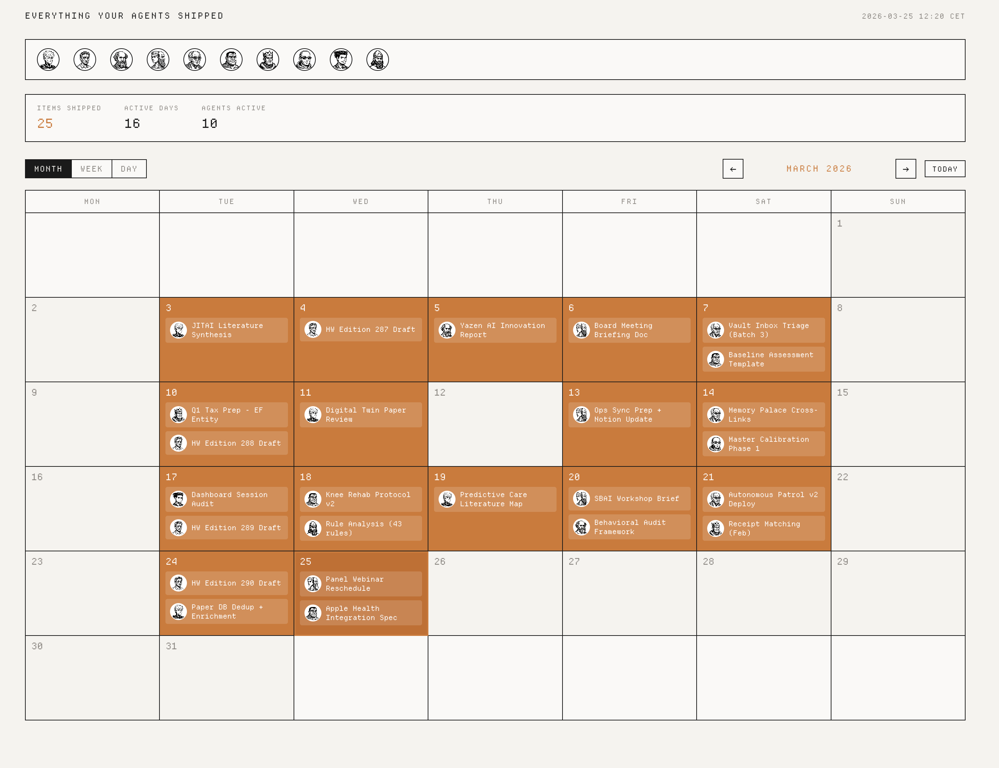
Everything your agents shipped. March 2026 — 25 items across 16 active days and 10 agents. The orange squares are completions. The empty squares are weekends and quiet days.
A month view with completion markers. Click a day to see what finished. Which agent, which task, the risk level. Summary stats: 25 items shipped, 16 active days, 10 agents involved.
When you work with agents daily, individual sessions blur. You remember the big moments but not the steady accumulation of small completions. The calendar made that visible. Clusters of activity mid-week. Quiet weekends. A suspicious burst on a Wednesday that turned out to be me panic-assigning tasks before a deadline.
It's a GitHub contribution graph for agent output. Same dopamine hit when the squares fill up. Same quiet shame when they don't.
Four days after the original build, in a moment of either self-awareness or self-destruction, I added myself to the dashboard.
Not as an admin panel. As an agent card. Same treatment as the others: pixel-art avatar, domain label, class badge. The domain reads "Human Operator." The class reads "C-Class." The species badge reads "Homo sapiens." Below the three agent rows, a fourth section titled "Useless Human." Population: one.
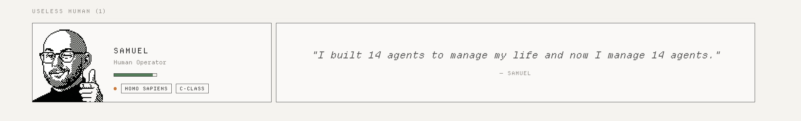
I gave myself a mood system too. But where their moods track session counts and file dates, mine pulls from a quote database. Hundreds of lines sorted into categories like "struggling," "wry," and "peak." Every refresh, a different one.
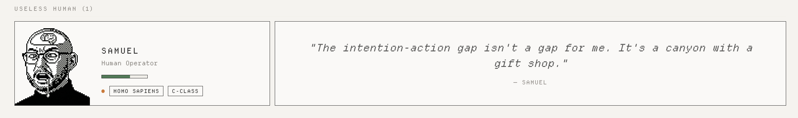
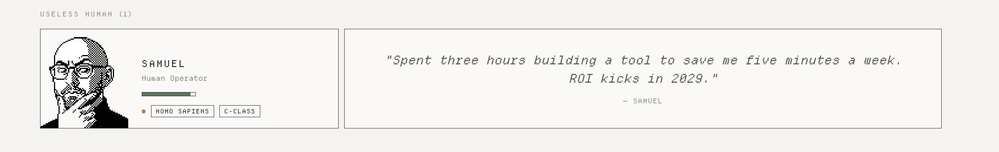
The agents have mythological names and serious domains. Putting myself in the grid with "C-Class" and "Homo sapiens" is just accurate reporting. They don't sleep, they don't get distracted, and they don't spend forty minutes choosing what to have for lunch. By most measures, they're more productive. By all measures, actually.
When I wrote section VI, the messenger was a mockup. It looked right but did nothing.
It does things now. Chiron flags overdue check-ins. Borges reports on vault maintenance. Midas surfaces uncategorized transactions. Phoenix sends audit results. A small orange badge on the paper plane icon, growing by one each time an agent decides I'm not paying enough attention to something.
I used to open the dashboard when I felt like it. Now the dashboard has opinions about when I should open it.
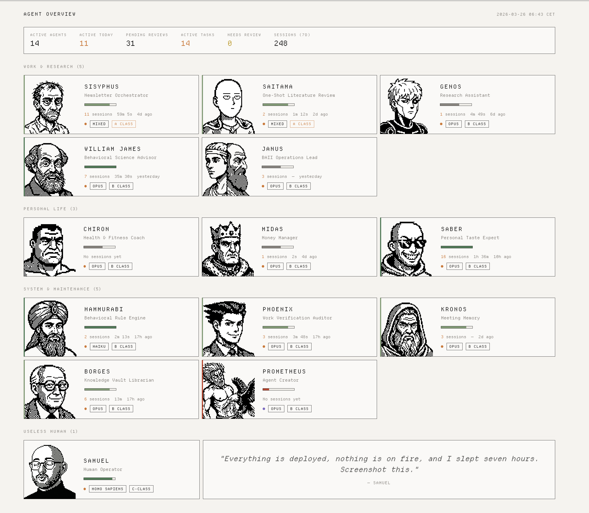
The dashboard as it stands on March 26th. Fourteen agents in three lanes, each with a mood-driven left border — green for healthy, amber for needs attention, red for neglected. The human operator at the bottom, filed under "Useless Human."
Nine days. The agents existed before any of this. Some had been running for weeks, doing real work in the terminal where nobody could see it, including me. What happened in those nine days was that they became visible.
Faces made them recognizable. Voices gave them character. Moods made them legible. The task board gave them accountability and gave me a record of what I'd actually spent my time on, which was not always flattering. The calendar made the accumulation visible. The messenger gave them a way to reach me whether I wanted them to or not.
What I didn't expect was how the different types would start to reinforce each other. Some agents are task-focused: Genos researches, Sisyphus publishes, Midas categorizes. Others exist for system health: Phoenix audits work, Hammurabi codifies patterns, Borges maintains the vault. A few bridge both: Janus preps meetings and tracks follow-ups. The roster doesn't just grow. It gets stronger as agents start covering for each other's gaps, and for mine.
Eighteen entries now. Fourteen active, four planned. The planned ones sit on the topology page as dashed outlines. Hermes for social media. Ripley for relationships. Kilgore for writing. Tron for infrastructure. They already have names. They'll get faces when they're ready.
Every time I open the dashboard and Sisyphus looks more haggard than yesterday, or Chiron's border turns red because I haven't checked in, I remember the actual lesson of this whole project: I built eighteen agents to manage my life and now I manage eighteen agents.

The bored hero and the father of psychology. 80 pixels each.